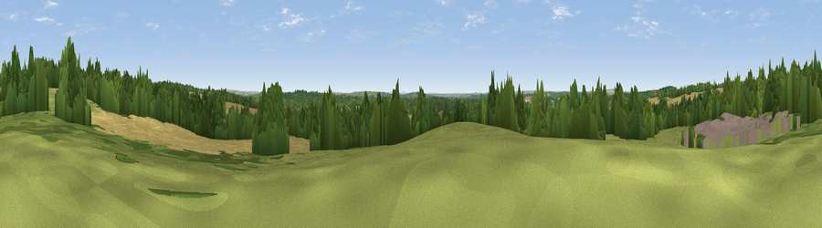

Broom Hill
#32633 in England · top 40% of its area beats it · near BraishfieldThe view, rendered

A 360° render of this exact spot computed from the terrain model, tree cover and land cover — summer colours, afternoon light, calibrated against photographs of famous viewpoints. Real trees, hedges and buildings will differ in detail.
The panorama
Grey silhouette: terrain skyline in each direction (720 bearings, Earth curvature and refraction included). Dashed green: skyline with trees (+15 m) and buildings (+8 m) as obstacles. Blue strip: how far the ground is visible on each bearing.
Where the view opens
Wedge length = distance to the farthest visible ground on that bearing (vegetation-aware). Rings at 10, 25 and 50 km.
What fills the view
33% woodland · 33% grassland · 31% cropland · 2% built-up
Angular shares of the visible panorama (visual magnitude), not map area. Landscape diversity 0.52 (0–1 Shannon).
Key numbers
More beautiful places nearby
The staircase of upgrades: each row has a higher view potential than everything closer. Driving times are estimates from straight-line distance, calibrated against real road routing — check an actual route before setting out.
| Place | Direction | Drive | Score |
|---|---|---|---|
| Violet Hill | ENE · 3 km | ~7 min | 55.7 |
| Viewpoint near King's Somborne | NNE · 3 km | ~8 min | 61.3 |
| Viewpoint near Sparsholt | NNE · 3 km | ~8 min | 66.9 |
| Beacon Hill | E · 22 km | ~37 min | 71.7 |
| Viewpoint near Meonstoke | ESE · 26 km | ~42 min | 74.8 |
| Beacon Hill | NNE · 32 km | ~49 min | 76.7 |
| Viewpoint near Buriton | E · 34 km | ~52 min | 80.0 |
| Viewpoint near Brook | S · 40 km | ~60 min | 82.5 |
51.03346, -1.45163 · source: osm peak · position refined by local search. Computed location — check access rights before visiting.